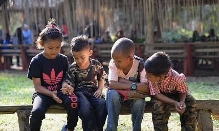

사랑하는 동역자님께,
필리핀에서는 ‘산족’이라 불리고, 말레이시아와 인도네시아에서는 ‘원주민’이라 불리는 사람들이 있습니다. 그러나 사실 그들은 이 땅의 본래 주인이었습니다.
하나님께서 길을 열어 주시니 감사합니다. 그들을 볼 수 있는 기회, 그리고 함께할 수 있는 기회를 주심에 감사드립니다.
이 아름다운 길에 여러분과 함께 가기를 소원하며, 제가 먼저 한 발짝 그 길을 가 보겠습니다.